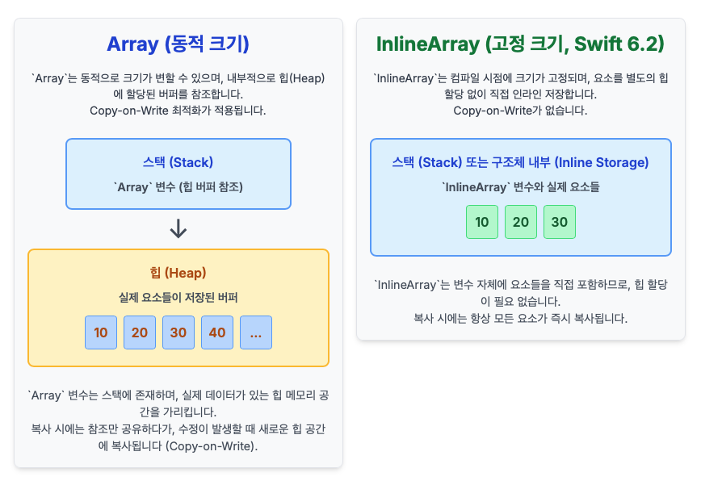

[WWDC25] Swift 6.2 InlineArray: iOS 앱 성능 및 메모리 최적화
Swift 앱의 성능 최적화와 InlineArray의 등장
Swift 애플리케이션 개발에서 성능 최적화, 특히 메모리 효율성은 중요한 과제입니다. 이번 WWDC25에서 Swift 6.2와 함께 소개된 InlineArray는 이러한 메모리 사용량 및 성능 개선을 위한 핵심 도구로 제시되었습니다. 이 글은 InlineArray의 특징과 기존 Array와의 차이점, 그리고 실제 iOS 앱 개발에서의 활용 방안을 분석합니다.
Swift 6.2의 InlineArray는 iOS 앱의 메모리 및 성능 최적화를 위한 새로운 핵심 도구입니다.
InlineArray의 구조적 차별점
기존 Array는 동적 크기 조절과 값 타입 특성 유지를 위해 힙 할당 버퍼 및 Copy-on-Write 최적화를 사용합니다. 반면 InlineArray는 컴파일 시점에 크기가 결정되는 고정 크기 배열이며, 요소를 힙 할당 없이 직접 인라인으로 저장합니다. 이는 참조 계산, 고유성/독점성 검사, 그리고 Copy-on-Write 과정에서 발생하는 런타임 오버헤드를 제거하여 성능을 향상시킵니다. 또한, 컴파일 시점에 크기를 알 수 있어 경계 검사 생략 등 추가적인 최적화 가능성을 제공합니다.
InlineArray는 고정 크기 인라인 스토리지를 통해 힙 할당 및 런타임 오버헤드를 줄여 성능을 개선합니다.

InlineArray 사용의 전략적 고려사항
InlineArray는 크기가 고정되어 있고, 빈번한 접근이 필요하며, 복사 및 참조 공유가 불필요한 데이터 구조에 적합합니다. WWDC25 세션에서는 이미지 파서의 픽셀 캐시와 같은 예시를 통해 그 효율성을 강조했습니다. 구체적인 활용 사례로는 SwiftUI View 내부의 고정된 상태 관리, 데이터 파싱 시의 임시 고정 버퍼, 그리고 유틸리티 함수 내부의 고정 크기 계산용 배열 등이 있습니다. 이러한 시나리오에서 InlineArray는 불필요한 힙 할당 및 해제 비용을 절감하여 앱의 성능을 개선할 수 있습니다.
InlineArray는 고정 크기 데이터, 성능에 민감한 코드 경로, 임베디드 시스템 등 특정 시나리오에서 효율적입니다.
InlineArray 샘플 코드 분석
InlineArray의 사용법은 일반 Array와 유사하나, 타입 선언 시 크기를 명시해야 합니다. 다음 코드는 3개의 Int 요소를 가지는 InlineArray의 선언, 초기화 및 요소 변경을 보여줍니다. append나 removeFirst와 같은 동적 크기 조절 메서드는 사용할 수 없으며, 할당 시 Copy-on-Write 없이 즉시 요소들을 복사합니다. 또한, 다른 크기의 InlineArray 타입 간에는 직접 할당이 불가능합니다.
// InlineArray 선언 및 초기화
// 3개의 Int 요소를 가지는 InlineArray를 선언하고 초기화합니다.
var array: InlineArray<3, Int> = InlineArray([1, 2, 3])
print("초기 InlineArray: \(array)") // 출력 예시: 초기 InlineArray: [1, 2, 3]
// 요소 변경 (인덱스를 통한 접근)
array[0] = 4
print("요소 변경 후: \(array)") // 출력 예시: 요소 변경 후: [4, 2, 3]
// InlineArray는 복사 시 즉시 요소들을 복사합니다 (Copy-on-Write가 아님).
var copy = array
copy[0] = 10 // copy는 변경되지만, 원본 array는 변경되지 않습니다.
print("원본 array: \(array)") // 출력 예시: 원본 array: [4, 2, 3]
print("복사된 copy: \(copy)") // 출력 예시: 복사된 copy: [10, 2, 3]
- 크기가 고정되어 있어 append 또는 removeFirst와 같은 메서드는 사용할 수 없습니다.
- 다른 크기의 InlineArray로는 할당할 수 없습니다.
InlineArray는 고정 크기를 명시하며, 동적 배열 메서드를 지원하지 않고 복사 시 즉시 전체 요소를 복사합니다.
Swift 앱 최적화의 새로운 지평
InlineArray는 Swift 6.2의 주요 성능 개선 사항 중 하나로, 고정 크기 데이터 처리 시 메모리 사용량과 실행 속도를 개선하는 데 기여합니다. 불필요한 힙 할당과 런타임 메모리 관리 오버헤드를 제거함으로써 iOS 앱의 효율성을 증대시킬 수 있습니다. 개발자들은 최신 Xcode를 통해 InlineArray 및 관련 Span 타입에 대해 추가 학습하고 실제 프로젝트에 적용하여 앱의 성능을 향상시킬 수 있을 것입니다.
InlineArray는 Swift 앱의 메모리 효율성과 실행 속도를 높여 성능 최적화에 기여하는 중요한 도구입니다.
일반적인 Array

- Stack에는 해당 변수의 메모리 좌표값만 자지고 Heap 메모리에 실제 저장
InlineArray

- Stack 메모리에 직접 저장